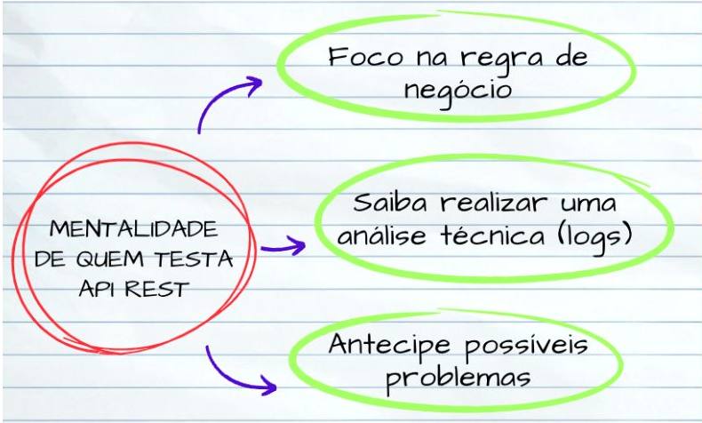

Quando vamos testar uma API REST, devemos ter em mente alguns pontos importantes
sendo eles:

Os pontos mencionados podem ser descritos como:
Esqueça um pouco a tela que você precisa testar por exemplo, você precisa testar uma tela de cadastro de
usuário, quando você olha para essa tela
por trás dela existe uma API, o teste quando feito somente na tela, não garante que toda a regra de negócio
contida na API esteja sendo devidamente
mapeada. FOQUE NA REGRA DE NEGÓCIO.
O custo da inconsistencia tende a ser bem maior nas fases iniciais do que nas fases finais.
É muito importante que eu como QA tenha em mente que posso ir além de testes, posso aprender a
analisar códigos a nível técnico, e também a analisar logs para que este procedimento facilite os meus
conhecimentos sobre o que está ocorrendo.
Eu como QA também posso corrigir inconsistências quando sei o que está realmente acontecendo no
ódigo.